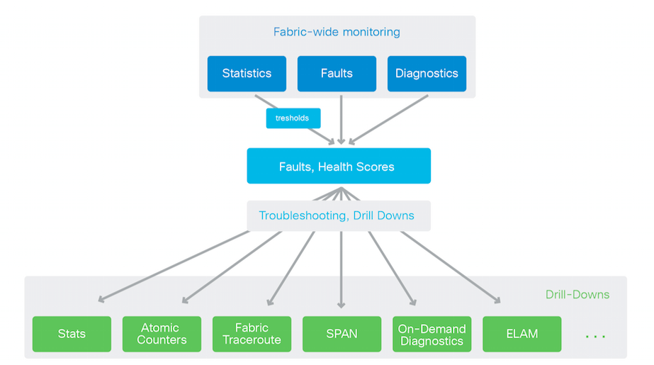
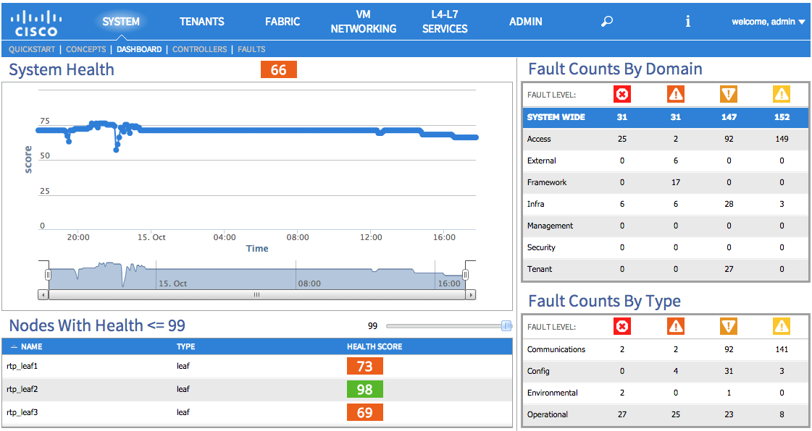
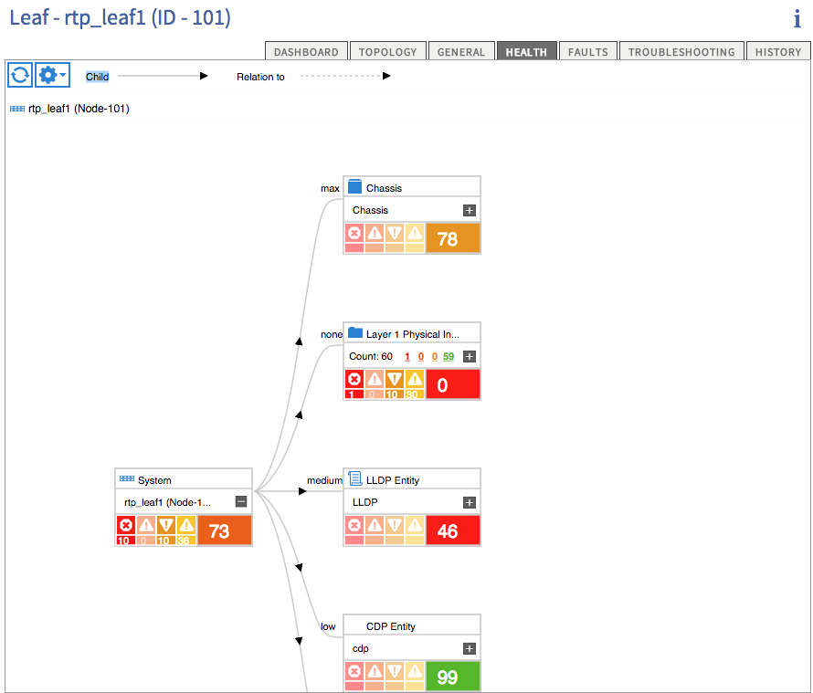
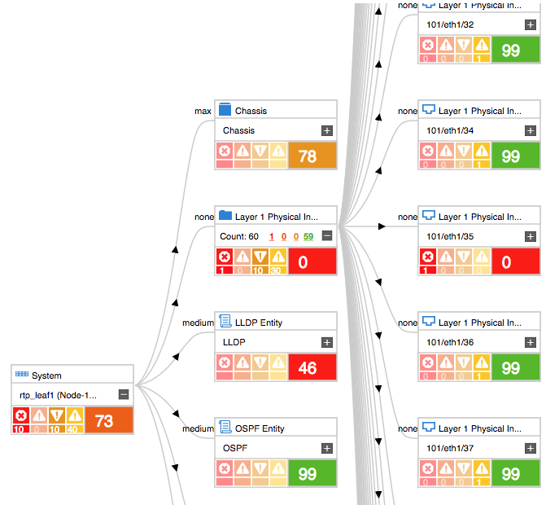
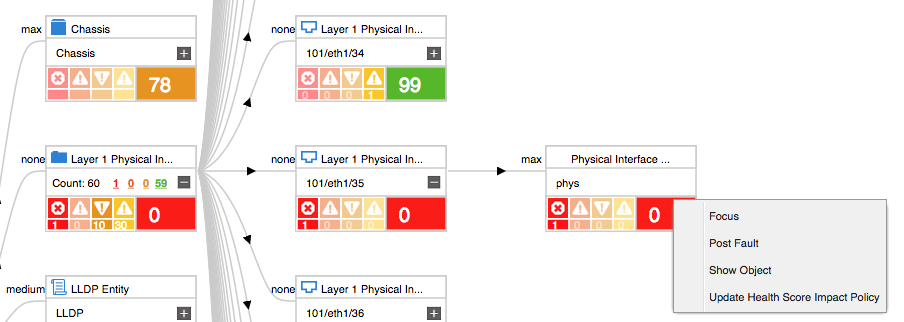
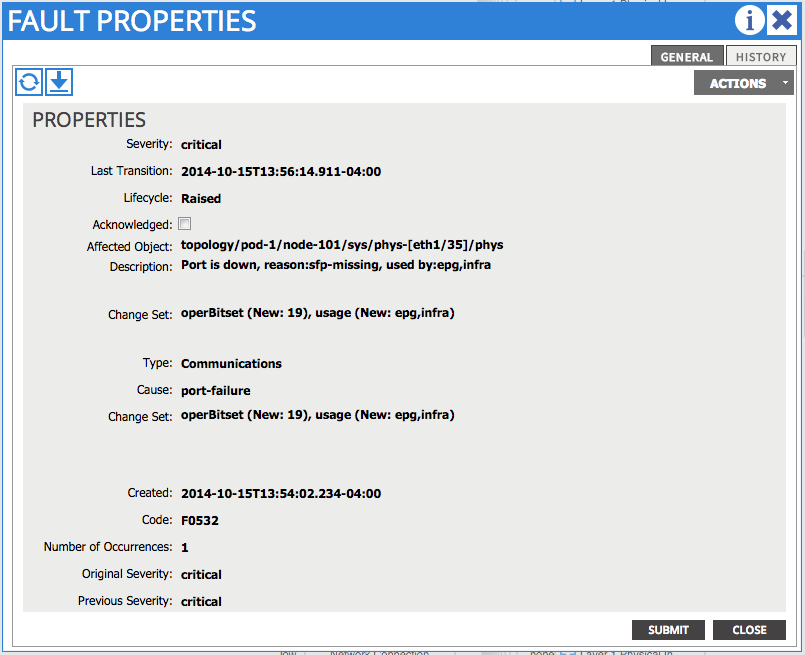

Faults / Health Scores¶
Overview¶
This chapter is intended to provide a basic understanding of faults and health scores in the ACI object model. This chapter will cover what these items are and how the information in these elements can be used in troubleshooting.
{kind=link}
For every object in the fabric that can have errors or problems against it, that object will have the potential of faults being raised. For every object, each fault that is raised has a related weight and severity. Faults transition between stages throughout a life cycle where the fault is raised, soaking and cleared. The APIC maintains a real time list of administrative and operational components and their related faults, which in turn is used to derive the health score of an object. The health score itself is calculated based on the active faults on the object and the health scores of its child objects. This yields a health score of 100 if no faults are present on the object and the child MOs are all healthy. The health score will trend towards 0 as health decreases. Health score of System is calculated using the health scores of the switches and the number of endpoints learnt on the leafs. Similarly, health score the tenant is calculated based on the health score of the resources used by the tenant on leafs and the number of endpoints learned on those leafs.
To describe the stages of the fault lifecycle in more detail, a soaking fault is the beginning state for a fault when it is first detected. During this state, depending on the type of fault, it may expire if it is a non-persistent fault or it will continue to persist in the system. When a fault enters the soaking-clearing state, that fault condition has been resolved at the end of a soaking interval.
If a fault has not been cleared by the time the soaking interval has been reached, it will enter the raised state, and potentially have its severity increased. The new severity is defined by the policy for the particular fault class, and will remain in the raised state until the fault condition is cleared.
Once a fault condition has been cleared, it will enter the raised-clearing state. At this point a clearing interval begins, after which if the fault has not returned it will enter the retaining state, which leaves the fault visible so that it can be inspected after an issue has been resolved.
At any point during which a fault is created, changes state or is cleared, a fault event log is generated to keep a record of the state change.
Problem Description¶
Health Score is not 100%
Symptom 1:¶
A fault has been raised on some object within the MIT
Resolution 1:¶
The process for diagnosing low health scores is similar for physical, logical and configuration issues, however it can be approached from different sections of the GUI. For this example, a low overall system health score due to a physical issue will be diagnosed.
1. Navigate to the System Health Dashboard, and identify a switch that has a diminished health score.
{kind=link}
Look primarily for health scores less than 99. Double clicking on that leaf will allow navigation into the faults raised on that particular device. In this case, double click on rtp_leaf1.
Once in the Fabric Inventory section of the GUI, the dashboard for the leaf itself will be displayed, and from there navigate into the health tab, by either double clicking the health score or clicking on the “Health” tab.
{kind=link}
Now the nodes in the health tree can be expanded, to find those with low health scores. To the left of each node in the tree, it can be seen that there will an indicator showing the impact of the particular subtree on the parent’s health score. This can be one of Low, Medium, Max or None. If the indicator states None that means that this particular object has no impact on the health of the parent object. Information describing the different severity of faults present on the managed object, along with their counts is also displayed.
{kind=link}
Navigating into a sub object by clicking the plus sign, will show the sub objects that make up the total health score of the parent.
Navigating down through the tree, it can be noticed that there are no faults raised directly on an object, which means that some child object contains the faults. Continue to navigate down through the tree until the faulted objects have a value that is present.
Once such an object has been reached with no children, the cause of the fault has been found. It is possible right click anywhere on the object. Clicking in this area brings up an action menu making it possible to show the fault objects “Show Object”.
{kind=link}
Click on the “Show Object” menu, to bring up the object that has the fault along with a number of details regarding that objects current state. This includes a tab named “Faults” which will show what faults are raised. Double clicking a fault will provide the fault properties and with this information, it is possible to limit the area for troubleshooting to just the object that has the fault.
{kind=link}
In the above example, it can be seen that an interface has a fault due to being used by an EPG however missing an SFP transceiver. Along the same line any environmental problem and hardware failures are presented the same way.
Problem Description¶
Health score degraded, identification has been made of faults indicating “LLDP neighbor is bridge and its port vlan 1 mismatches with the local port vlan unspecified” at the Fabric Level
Symptom 1:¶
The front panel ports of the ACI leaf switches do not have a native VLAN configured by default.
If a Layer-2 switch is connected to a leaf port, certain models including Nexus 5000 and Nexus 7000 by default will advertise LLDP with a native vlan of 1. LLDP on N7K side would advertise 1 in the TLV, and our side would trigger the fault.
There is no native vlan configured on front panel ports of fabric leaf by default. Normally this is not an issue when servers are connected to these leaf ports. When a layer2 switch is connected to leaf port, it is important that native vlan is configured on that leaf port. If not configured, leaf may not forward STP BPDUs. Hence native vlan mismatch is treated as critical fault.
Resolution 1:¶
This fault can be cleared by configuring a statically attached interface to the path interface on which the fault is raised. The EPG static path attach should have the encap VLAN set to the same as the native VLAN, and have the mode set as an untagged interface. This can be configured via XML, using the following POST request URI and payload.
https://10.122.254.211/api/mo/uni/tn-Prod/ap-Native/epg-Native.xml
<fvAEPg name="native">
<fvRsPathAtt tDn="topology/pod-1/paths-103/pathep-[eth1/5]"/>
<fvRsPathAtt tDn="topology/pod-1/paths-101/pathep-[eth1/5]"/>
<fvRsDomAtt tDn="uni/phys-phys"/>
</fvAEPg>
Resolution 2:¶
To clear this fault from the system, configure the downstream switch to not advertise a vlan. This can be configured using the “no vlan dot1q tag native” command in global config mode, after which bouncing the interfaces connected to the fabric using “shutdown” and “no shutdown” should clear the issue.